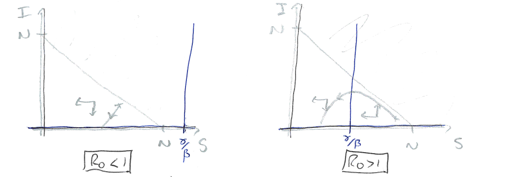

5 - Epidemics in human populations#
Introducing the SIR model#
I suspect that mathematical modelling of disease spread has never been as topical or well-known amongst the general public than in the last few years. Many modellers and scientists have been contributing to our understanding of the Covid-19 pandemic, from public-facing talks and twitter threads, to research being conducted and published to directly advising the government. In the next few lectures we will go through the fundamentals of the mathematical models that are the basis of most of this modelling work. The models that have been used to advise the government are of course rather more detailed than those you will see here (and we’ll discuss some extensions as we go along), but there is a common engine behind them all.
So far we have assumed that every individual within each population is identical. Such a generalisation has the benefit of reducing our model to a low number of variables. But often certain individuals within a population are fundamentally distinct from one another. In this case, we might want to divide our population up in to different compartments. The choice of how to divide our population in to different compartments is often dictated by the biological question we are seeking to address. For the next few lectures we will focus on epidemic models, where we think about disease dynamics within populations of humans, animals or plants that act as hosts for diseases such as viruses or bacteria, often termed parasites. A key message to take away from these lectures is how simple many of the models are. Yet, these models are in fact used by researchers (including me!) to study the behaviour of many important real-world diseases.
We will initially assume we are interested in infectious diseases of human populations. When thinking about the spread of disease through a human population, it is clearly not very helpful to consider all individuals as identical, as individuals will move through different stages over the course of an infection. Let’s draw a schematic diagram to picture this:
Figure: Schematic of the SIR epidemic model.
Before a disease emerges, all individuals in the population are susceptible. Once exposed to the disease, individuals may then become infected (and also infectious). Finally, individuals will eventually fight off the disease to become recovered and immune.
This is the SIR model, and has been central to our understanding of disease dynamics in human populations since it was first proposed by Kermack and McKendrick in 1927. Disease is transmitted by ‘direct contact’ between infected and susceptible hosts and is a mass action process. When hosts have recovered, they gain immunity and cannot be infected again (this is a key aspect of vertebrate - and especially human - immune systems, but is not necessarily true of invertebrates, plants, etc. We will consider models more appropriate for such populations later). \(\beta\) controls the rate at which contacts between \(S\) and \(I\) hosts cause infection, and \(\gamma\) is the rate of recovery. In this initial example we have not included any birth or death processes, as we assume that infection happens at a much faster timescale than demography. By considering our schematic diagram above we can write down the dynamics of our system as a set of ODEs:
with the total population, \(N=S+I+R\). There are some useful definitions it is worth making at this point:
\(\beta I\) is often called the force of infection;
\(I/N\) gives the prevalence of infection;
\(1/\gamma\) is the infectious period.
Note that \(dN/dt = dS/dt+dI/dt+dR/dt=0\), and so the total population stays at a constant size. This is a reasonable assumption for an epidemic outbreak in long-lived human populations. Because of this we can eliminate one variable, with \(R=N-(S+I)\) and ignore the \(dR/dt\) equation.
Epidemics#
Again, despite the simplicity of this model (two variables and two parameters), there exists no explicit solution. However, we can explore the qualitative behaviour of the model by identifying {equilibria} of the system and their stability.
Considering the model, the only steady-state is when \(I=0\) (and \(S\) may take any value \(<N\)). This implies that in the long-run, we would expect the population to reach a point with no infected hosts i.e. the system will become disease-free. In the long-run this is often the case with emerging diseases - they will eventually burn out - but it is still important for us to know whether there can be an epidemic, when an initially small amount of infection causes a large outbreak of disease in the population (even if it eventually tends to zero).
For an epidemic to occur, we need to have \(dI/dt>0\) initially. Before an outbreak, the initial densities are \(S(0)\approx N,I(0)\approx0\). This gives,
\(\beta N-\gamma<0\) \(\implies\) disease dies out.
\(\beta N-\gamma>0\) \(\implies\) epidemic.
Let’s draw phase portraits of our SIR model for the two scenarios we have found above. To find the nullclines we take,
Have a go
Draw the two qualitatively different phase portraits for this system.
Click for solution
Remember where two (different) nullclines intersect is necessarily an equilibrium, which means here we have a continuum of equilibria along the line \(I=0\). Using our equations we can then find out in what regions \(S\) and \(I\) will be increasing or decreasing. Again, note it doesn’t matter that we can’t say precisely the direction of a trajectory anywhere on our plot; knowing the qualitative direction of travel gives us all the information that we need.
Figure: Two sketches of the phase portrait for the SIR model, with \(R_0<1\) and \(R_0>1\).
In the first case, the vertical nullcline at \(S=\gamma/\beta\) does not appear in the feasible region, so actually has no impact on the dynamics. In fact we will always just drop down towards \(I=0\) and the disease dying out. In the second case, the phase portrait is divided into two regions. If we start in a region to the right of the nullcline, the infected density initially increases – we have an epidemic – before crossing the vertical nullcline and approaching \(I=0\) again. Therefore the equilibria where \(S<\gamma/\beta\) appear to be locally stable (which it turns out is equivalent to the second eigenvalue being negative).
The divide between these two cases is whether \(N>\gamma/\beta\) or not. We can rearrange this to the condition \(\beta N/\gamma>1\). This ratio is known as \(R_0\), so we have that if \(R_0>1\) we get an epidemic but if \(R_0<1\) the disease dies out.
The basic reproductive ratio, \(R_0\)#
There is a very strong chance you have heard the terms \(R\) or \(R_0\) in discussions about the rate of spread of covid-19. We define \(R_0=\beta N/\gamma\) as the basic reproductive ratio of the disease: ‘The average number of secondary infections caused by one infected host in an otherwise disease-free population.’ Note that \(\beta N\) gives the total infections caused in a disease-free population, and \(1/\gamma\) is the infectious period. So \(R_0\) gives the number of infections caused by an individual in the time that it’s infected near the start of an epidemic. The more general term, \(R=\beta S/\gamma\) gives the number of new infections per case later in the epidemic when many individuals have already been infected and/or recovered.
Disease |
R_0 |
|---|---|
Flu |
1-3 |
Covid-19 |
2-4 |
SARS |
2-5 |
HIV |
2-5 |
Smallpox |
5-7 |
TB |
8-10 |
Measles |
12-18 |
Estimates of \(R_0\) for some important human diseases.
The epidemic curve#
The phase portraits demonstrate again that an epidemic should always burn out and the population return to being disease-free. Interestingly the phase portraits also suggest that not all of the population will get infected during an epidemic. As we have already said, due to the non-linearity of the system we are unable to find an exact solution and therefore cannot say precisely what the dynamics should look like. However, it is useful to understand what the epidemic curve - the number of perople infected over time - looks like. With some approximations it is possible to express this as a mathematical formula, but we shall just look at some numerical output as shown in the left-hand side of the figure. This gives a characteristic bell-shaped curve. This is in fact the sort of curve we see from data from many real-world epidemics. In the right-hand side we show how the reproductive ration \(R\) changes during the epidemic. Notice that the peak of the epidemic is precisely at \(R=1\).
Figure: An epidemic curve based on a populaion of \(N\)=500,000 and \(R_0=3\) and how the value of \(R\) changes during the epidemic.
3 key points#
We can model diseases using a compartment framework called the SIR model.
An epidemic will occur when \(dI/dt\) is initially positive, but will always reach an equilibrium where \(I=0\).
We can measure how quickly a disease initially spreads using \(R_0\), and this tells us with there will be an epidemic or not.